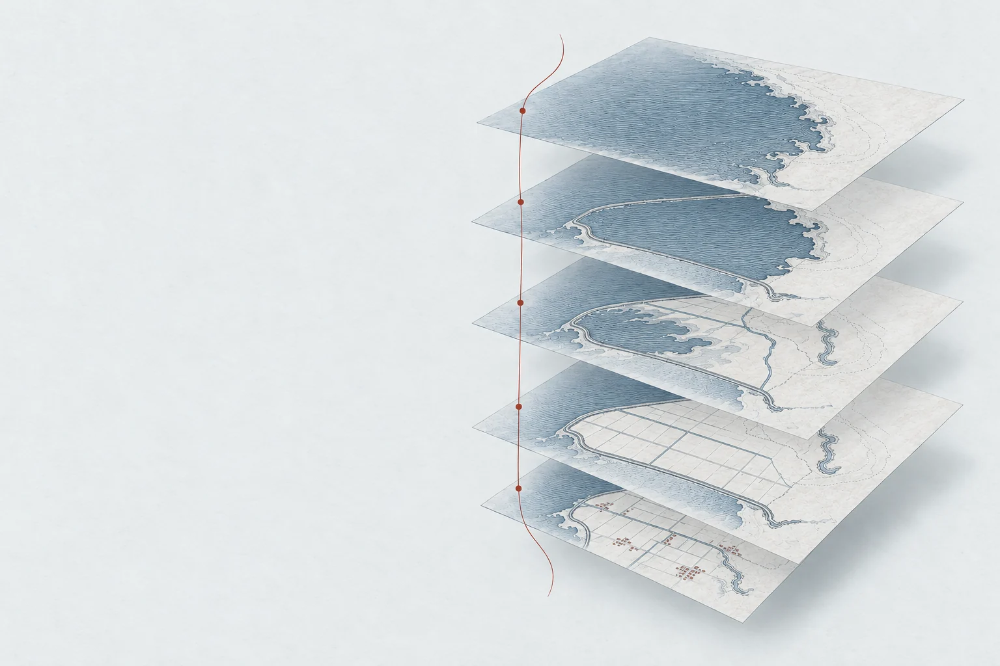
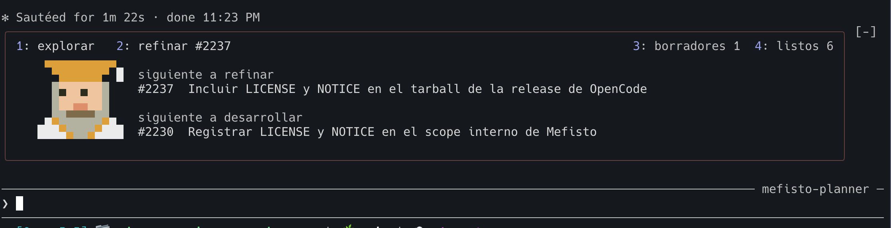
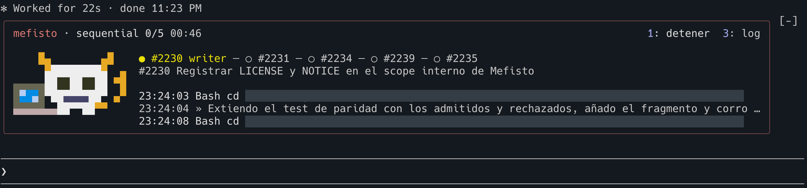

Plugin open source para Claude Code
Mefisto
.NET 10 · Azure serverless
Event Sourcing · TDD
Delega la construcción
Conserva el criterio
Agentes que te ayudan a planear y refinar, y después construyen tu aplicación: desde la infraestructura hasta las funcionalidades. Con límites de dominio explícitos, pruebas primero y revisión en cada incremento.

Nuestra inspiración / Fausto, de Goethe
Ganarle tierra
al mar
Fausto sueña con transformar el mar en tierra habitable. Esa ambición de hacer real lo que aún no existe inspira Mefisto.
Aquí, la obra es tu software. Tú lo imaginas, lo diseñas y defines sus límites. Mefisto dirige a los agentes para construirlo, con pruebas, reglas claras y revisión.
La fuerza de los agentes, al servicio de tu criterio
La intención precede a la construcción
Fausto diseña lo posible
Mefisto lo hace real
El atlas empieza mirando hacia adelante: qué queremos que exista. Después registra la construcción: límites, conexiones, vistas y funcionalidades que dan forma al sistema y a su historia.
- 1.1
Planeación
El mapa de lo posibleFausto mira hacia el futuro: imagina lo que quiere hacer posible, para quién y por qué importa. Con el planner como interlocutor, explora el negocio, nombra sus conceptos y ordena la ambición en un backlog.
Herramientas y condiciones
/mefisto:draft <idea>captura la intención.
El planner acompaña la exploración y el desglose. La visión y las decisiones siguen siendo tuyas.Qué quedaVisión compartida, lenguaje ubicuo, alcance inicial y dependencias. - 1.2
Refinamiento
Las intenciones anotadasFausto detalla sus intenciones: comportamientos, límites de dominio, comandos, eventos y criterios de aceptación. Las preguntas abiertas se resuelven y el trabajo se divide en incrementos claros antes de construir.
Herramientas y condiciones
Planner en modo
refinar→ revisión de complejidad → Definition of Ready → confirmación para pasar a listo.
El DoR incompleto y las dependencias no resueltas bloquean el inicio de la implementación.Qué quedaIssue listo: intención explícita, criterios verificables, ADR y decisiones cerradas.
La intención se vuelve un contrato: alcance claro, límites explícitos, criterios comprobables y decisiones cerradas.
- 2.1
Infraestructura de nube
La capa de infraestructuraMefisto prepara la base en Azure con infraestructura como código: cómputo, PostgreSQL, Service Bus, almacenamiento y observabilidad. Los cambios viajan por Terraform y CI/CD, junto con su evidencia.
Herramientas y condiciones
/mefisto:infra-base devprepara la base./mefisto:infra <issue>construye cambios de infraestructura.
El bootstrap inicial de estado y permisos requiere un administrador; el plan ocurre en el PR y el apply tras integrar a main.Qué quedaInfraestructura versionada, plan revisable y aplicación del cambio por CI. - 2.2
Dominios y límites
Los límites del mapaLa intención de negocio se convierte en módulos con responsabilidades claras. Mefisto prepara cada dominio con su Function App, persistencia delimitada, proyectos de pruebas, infraestructura y despliegue.
Herramientas y condiciones
/mefisto:scaffold <dominio>
El scaffold requiere confirmación y prepara el andamiaje, no todas las funcionalidades. Dominio significa aquí dominio de negocio, no DNS.Qué quedaDominios preparados para evolucionar sin diluir sus reglas ni sus fronteras. - 2.3
Comunicación por eventos
Los hechos que cruzan fronterasMefisto implementa los contratos, productores y consumidores que conectan los dominios. Los topics y las suscripciones hacen explícita la comunicación asíncrona; cada dominio conserva sus reglas y su propia historia.
Herramientas y condiciones
El issue refinado declara el evento y su ruta de salida. Los cambios de negocio usan
/mefisto:implement <issue>; los de infraestructura,/mefisto:infra <issue>.
No todo evento persistido se publica. El bus interno comunica dominios del mismo BC; los eventos públicos inter-BC van por el backbone compartido.Qué quedaContratos y rutas de eventos, infraestructura de mensajería y handlers probados. - 2.4
Funcionalidades con TDD
Cada cambio, comprobadoTres agentes convierten los criterios de aceptación en pruebas, implementación y revisión. Mefisto coordina el ciclo TDD con responsabilidades separadas y evidencia en cada incremento.
Conocer a los tres agentes ↓Qué quedaCódigo, pruebas y evidencia de revisión por incremento. - 2.5
Proyecciones y consultas
CQRS / Escritura y lectura separadasMefisto aplica CQRS: separa los comandos que cambian el estado del negocio de las consultas que lo leen. El lado de escritura aplica las reglas de negocio y persiste eventos; las proyecciones transforman esa historia en modelos de lectura diseñados para cada necesidad de consulta. Los endpoints GET leen esas vistas sin ejecutar lógica de escritura. La actualización es asíncrona por defecto: hay consistencia eventual, por lo que un cambio confirmado puede tardar en aparecer en una consulta.
Arquitectura CQRS, herramientas y condiciones
Dos modelos, responsabilidades distintas. CQRS significa Command Query Responsibility Segregation. La escritura protege las invariantes del dominio; la lectura ofrece vistas materializadas con la forma que necesita el usuario, sin obligarla a copiar los agregados o eventos. El proyecto
ReadModelscontiene records de datos sin dependencias de Marten ni referencias a otros proyectos.Cómo se materializan las vistas. Un worker .NET por Bounded Context ejecuta el daemon asíncrono de Marten en modo
HotCold, desplegado en Azure Container Apps sin endpoint HTTP. Lee eventos persistidos directamente en PostgreSQL, no desde Service Bus. Las Functions GET del dominio consultan los modelos resultantes. Son modelos separados sobre la misma base y el mismo esquema del dominio, no dos bases obligatorias.Consistencia y evolución. El diseño debe contemplar el desfase entre escritura y lectura. Una proyección
Inlinerequiere una necesidad explícita de consistencia inmediata y se registra en el lado de escritura, no también en el worker. Las vistas pueden reconstruirse desde los eventos; recalcularlas tiene un costo operativo que debe planearse./mefisto:scaffold-projections, conprojections.enabledhabilitado, prepara el worker,ReadModelsy los tests de configuración. No crea las vistas concretas: estas y sus consultas se implementan mediante issuestipo:projection, con pruebas.Referencias: Patrón CQRS · Worker y consistencia · Diseño de las vistas
Qué quedaUn lado de lectura con vistas materializadas, endpoints GET y pruebas; separado del modelo de escritura y con consistencia explícita. - 2.6
Entrega y siguiente incremento
La siguiente transformaciónCI/CD despliega los cambios y las verificaciones comprueban el dominio publicado. Lo aprendido alimenta el siguiente incremento: Fausto precisa la intención que sigue; Mefisto vuelve a construir sobre lo que ya existe.
Herramientas y condiciones
Los smoke tests y el readiness por SHA vinculan la comprobación al código desplegado.
La política de integración pertenece al proyecto. Infraestructura, dominios y proyecciones se amplían según las necesidades, no se reconstruyen en cada iteración.Qué quedaCambio trazable, verificaciones del despliegue y base para la siguiente funcionalidad.
Flujos publicados: planner · infra-base · infra · scaffold · scaffold-projections · implement. Relato del flujo publicado; no ejecución real ni comando único.
TDD con tres agentes
Un contrato verificable
Los criterios de aceptación acordados en la planeación y el refinamiento son el contrato. Mefisto coordina tres subagentes con reglas estrictas de separación de responsabilidades.
Test writer
Convierte los criterios de aceptación de la planeación y el refinamiento en pruebas de comportamiento que deben fallar antes de la implementación.
Límite Define las pruebas sin implementar la funcionalidad.
Ver contrato ↗Implementer
Escribe el código que hace pasar las pruebas, respetando las reglas del dominio y los ADR del proyecto.
Límite Implementa sin modificar los tests.
Ver contrato ↗Reviewer
Contrasta criterios, pruebas y código. Revisa la arquitectura, refactoriza y documenta lo comprobado y lo pendiente.
Límite Refactoriza sin alterar el comportamiento.
Ver contrato ↗Flujo de implementación y condiciones
/mefisto:implement <issue>
test-writer → implementer → reviewer → sincronización con main → coverage gate → PR.
La regla exige al menos una prueba por criterio de aceptación. El reviewer documenta qué pruebas cubren cada criterio y los hallazgos pendientes.
Se trabaja en un worktree aislado. Un PR creado puede conservar bloqueos documentados; no equivale a aprobación.
Cobertura y evidencia
La medición mecánica distingue lógica, exclusiones y archivos sin clasificar. Puede activar una remediación acotada y vuelve a medir. Expone huecos de cobertura; no sustituye la revisión de los criterios de aceptación.
Guardrails de ejecución y conductas de código
Construir con límites
Diseñar para evolucionar
- Intención cerrada antes de ejecutar
- Definition of Ready y dependencias actúan como condiciones de arranque. La ambigüedad pendiente vuelve al refinamiento, no se delega silenciosamente al implementador.
- Fronteras y contratos explícitos
- Responsabilidades de dominio, rutas de eventos y decisiones arquitectónicas documentadas guían la implementación y la revisión.
- Código legible, cambios con propósito
- Refactorizar preservando comportamiento; mantener el lenguaje del negocio; evitar abstracciones prematuras y reutilizar cuando exista evidencia de evolución conjunta.
- Verificación que deja evidencia
- Pruebas, revisión, cobertura y comprobaciones de despliegue hacen visibles los resultados y los bloqueos. Las comprobaciones informativas no se presentan como barreras que detienen todos los cambios.
Que funcione hoy
Que pueda crecer mañana
La intención es construir software de uso real, capaz de evolucionar hacia miles de usuarios: dominios modulares, comunicación desacoplada, consultas pensadas para su uso y componentes con despliegue propio.
Es un objetivo de ingeniería, no un benchmark: la capacidad concreta depende del diseño, la configuración y la carga, y debe verificarse con pruebas y observabilidad.
Criterios de mantenibilidad: heurísticas de evolución y reúso · revisión del código. Las heurísticas de diseño admiten excepciones justificadas; no sustituyen los controles de ejecución.
UNA PRUEBA ES EVIDENCIA, NO UNA PROMESA
El criterio humano se convierte en contratos verificables. TDD reduce el trabajo de vigilancia, pero no demuestra por sí solo que los requisitos sean correctos, ni elimina todos los errores de un LLM.
Qué significa «verificado» y qué no
El objetivo publicado de cobertura de líneas es 95% para archivos clasificados como lógica; no es una cifra global ni cobertura de ramas. Los gaps se reportan y no impiden crear el PR. Si falla la instrumentación, el flujo advierte y continúa sin esa medición. También pueden quedar pruebas fallando documentadas: el PR exige leer la evidencia, no solo ver que existe.
Contrato de cobertura · Contrato del reviewer · Verificación del despliegue
Que el software evolucione
sin perder el porqué
El código muestra el resultado. Los ADR, las notas de campo y la bitácora conservan el contexto: qué decidimos, qué descartamos y cómo fue cambiando el proyecto.
El agrimensor acompaña sus mapas con notas de campo; el navegante registra lo ocurrido en una bitácora. Nuestro cuaderno de obra lleva ese cuidado al software: dejar un rastro que otros puedan seguir.
La razón de una decisión
Architecture Decision RecordUn registro para cada decisión de arquitectura significativa: contexto, alternativas consideradas, decisión y consecuencias. La fecha y el estado permiten entender qué se aceptó y qué se revisó después, sin borrar el razonamiento anterior.
Los issues declaran los ADR aplicables; los agentes los usan para implementar y revisar. Así, las reglas técnicas tienen una razón consultable, no dependen de recordar una conversación.
¿Por qué lo construimos así?
Lo que enseñó el terreno
Notas de campo del plannerAl cerrar una sesión, el planner registra contexto, descubrimientos, decisiones, opciones descartadas y preguntas abiertas. Cada nota conserva fecha, hora, tema y referencias a los issues: el conocimiento que aparece mientras diseñas no se queda solo en el chat.
Las notas recogen también decisiones de dominio y prioridades. No toda observación necesita un ADR; sí conviene conservar la evidencia que podría llevar a uno.
¿Qué aprendimos y qué quedó abierto?
La evolución, día a día
El historiador del proyectoEl agente historiador reúne field notes, commits, issues y ADR para componer una entrada por cada día con notas pendientes. Registra logros, problemas, caminos descartados y aprendizajes, enlazados con el trabajo que los produjo.
Es más que una lista de cambios: permite reconstruir cómo llegamos hasta aquí, incluso cuando una decisión se corrigió o un intento no funcionó.
¿Qué cambió, cuándo y qué aprendimos?
- ContextoNotas de campo
- CriterioADR aplicables
- TrabajoIssues · PRs · commits
- HistoriaBitácora por día
Las referencias cruzadas permiten volver del cambio a sus motivos. Si una decisión evoluciona, documentamos la nueva razón y su vínculo con la anterior.
Los eventos guardan la historia del negocio. Este cuaderno conserva la historia de las decisiones con las que construimos el software.
Cómo se registra y qué alcance tiene
El planner entrega sus notas fechadas en docs/bitacora/field-notes/ mediante un PR documental. Los ADR del marco guían a los agentes; las decisiones de arquitectura propias del proyecto se documentan en sus registros, no se crean automáticamente a partir de cada nota.
Al invocar /mefisto:bitacora, el historiador procesa las notas pendientes y escribe o amplía docs/bitacora/YYYY-MM-DD.md para cada día correspondiente. Conserva las entradas existentes y mueve las notas integradas a procesadas/. El comando publicado crea el PR de actualización y encadena su merge: invocarlo autoriza ese ciclo completo, no solo una consulta.
«Diaria» describe cómo se organiza la historia, no una ejecución programada cada día. La trazabilidad depende de registrar decisiones y referencias: no es una captura exhaustiva de todas las conversaciones ni sustituye los logs operativos.
Documentación del producto: Notas del planner · Agente historiador · Comando bitácora · ADR de Mefisto
Referencias de la analogía: Planos y notas de agrimensura · Bitácoras de navegación. Sobre el registro técnico: ADR, Michael Nygard. El cuaderno de obra es nuestra analogía editorial, no una atribución a Goethe.
Un método que trabaja
sobre tu código
El planner precisa contigo qué construir. Los agentes de infraestructura preparan la base; los de implementación escriben pruebas, desarrollan y revisan. Cada oficio tiene su lugar y sus reglas.
Para equipos que eligen .NET, Azure y Event Sourcing. Las decisiones de arquitectura son parte del producto.
- Qué instalas
- Un plugin con agentes especializados, comandos y flujos de trabajo para planear, refinar, construir y revisar.
- Dónde trabaja
- En tu entorno de desarrollo, sobre tu repositorio y conectado a tu CI/CD. La infraestructura se prepara para tu cuenta de Azure; Mefisto no es un servicio de hospedaje.
- Qué obtienes
- Código .NET, infraestructura como código, dominios desacoplados, eventos y proyecciones para consultas. El flujo de implementación incorpora pruebas con TDD y revisión técnica.
El trabajo avanza
No pierdas el hilo
Tu backlog, el foco del planner y el estado de las corridas, junto al prompt. Los mods hacen visible el trabajo y acercan las acciones al lugar donde ya estás desarrollando.
Incluidos en el plugin · sesiones interactivas de Claude Code · desde la versión 2.1.287
/fausto-boardLa intención, siempre a la vista
El tablero muestra qué exploras o refinas, los borradores que siguen y los issues listos para desarrollar. Fausto acompaña ese foco; sus poses distinguen la actividad y el cierre del trabajo.

Lo siguiente por refinar y lo siguiente por construir, a la vista mientras diseñas. La captura conserva el estado de esa sesión; no es un tablero en vivo.
Los atajos preparan instrucciones en el prompt. La lista de listos es de consulta: el planner no lanza la construcción.
Ver el tablero publicado ↗/fausto-blood-pactLa ejecución, sin perder el contexto
La consola reúne trabajo listo, agentes activos, lotes y resultados. Mefisto acompaña al agente en curso: sus poses cambian según el oficio y el estado, desde implementar hasta revisar o preparar infraestructura.

El lote, el agente activo y el registro de actividad, junto al prompt. Rutas locales ocultadas por privacidad; el resto de la captura se conserva. Sus controles no son interactivos aquí.
Prepara lanzamientos para que los revises; permite abrir PRs y solicitar su merge con confirmación. Un lote puede detenerse después del issue en curso, sin matar su proceso.
Ver las capacidades de la consola ↗La mascota comunica actividad; no certifica calidad. Para decidir sobre un cambio, revisas pruebas, resultados y PRs. Los mods leen el estado del pipeline y sus acciones delegan en los comandos de Mefisto.
Capturas reales aportadas por el autor; las rutas locales de la consola de Mefisto se han ocultado por privacidad. La apariencia y las herramientas visibles dependen del mod, la versión y el tema de la terminal; su presencia en estas capturas no implica paridad con el plugin publicado.
Disponibilidad y diferencia con los mods internos
Estas dos superficies pertenecen al plugin publicado para Claude Code. El tablero aparece en la sesión interactiva de mefisto:planner; la consola, en las otras sesiones interactivas del proyecto consumidor. No se muestra una experiencia equivalente para OpenCode ni para sesiones no interactivas. Los pipelines pueden funcionar sin los mods.
Para desarrollar Mefisto se usan otros dos mods: mefisto-planner-board y mefisto-divine-wager. Sus herramientas internas de bitácora, release y log en vivo no se presentan aquí como capacidades de la consola publicada.
Cada dominio conserva su historia
Los eventos cruzan sus límites
Persistir un hecho y comunicarlo son responsabilidades diferentes. Marten conserva los eventos del dominio. Service Bus transporta los eventos de integración. Las proyecciones producen las vistas que necesita el usuario.
Pedidos
Comando: confirmar pedido
Azure Functions · .NETWolverine → handler → reglas
Esquema propio
PedidoConfirmadoContrato plano de integraciónPublicación explícita
Bus interno del BC
Inventario
Reacción: reservar existencias
Azure Functions · .NETWolverine → handler → reglas
Esquema propio
Consistencia eventual, deliberada. Las partes no cambian todas a la vez. El diseño debe contemplar reintentos, duplicados y fallos parciales; no se representa como una transacción global ni como ausencia de errores.
Desacoplar no es borrar los contratos. El productor publica un hecho y los consumidores se suscriben. Dentro del BC se usa su bus interno; entre BC del producto, los eventos públicos van por el backbone compartido.
Event Sourcing y ejecución serverless · Límites y topología · Eventos privados y públicos. Esquema conceptual: omite autenticación, despliegues y detalles operativos.
El estado se reconstruye
a partir de los eventos
Selecciona un evento para ver el estado del pedido en ese punto de su historia. Los hechos se conservan; la vista se obtiene al aplicarlos en orden.
productos: 1 · eventos aplicados: 3Los eventos anteriores se conservan. Cambia el punto hasta el que los aplicamos.
Esta interacción explica el patrón. No es un visor de replay incorporado al plugin ni promete reconstruir infraestructura desde un historial. La persistencia de eventos del software consumidor es distinta del registro de corridas de Mefisto.
Inspiración literaria y créditos
La tierra ganada al mar remite a Fausto II, acto V, de Goethe. Su ambición también tiene consecuencias: la muerte de Filemón y Baucis y la ceguera de Fausto impiden leer la obra como un triunfo sin coste. La lectura de Marshall Berman en Todo lo sólido se desvanece en el aire acompaña esta inspiración.
La relación con los agentes, los límites de ejecución y Event Sourcing es una interpretación de Mefisto, no una teoría atribuida a Goethe. Las capacidades técnicas se explican y documentan en sus respectivas secciones.
Ilustraciones del atlas creadas para Mefisto con asistencia de IA. Mascotas originales del proyecto y capturas de terminal aportadas por su autor.